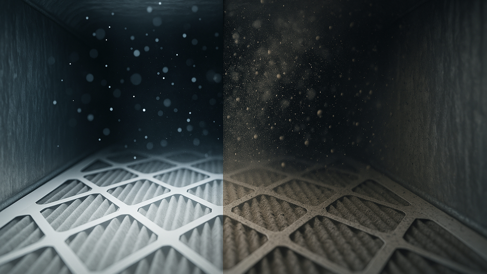

Hospital-grade antimicrobial treatment that eliminates mold, bacteria, viruses, and persistent odors from your ductwork.
Even after a thorough duct cleaning, microscopic contaminants can remain in your air passages — bacteria, viruses, mold spores, pollen, pet dander, and other allergens that are too small for vacuums alone to capture.
Our sanitization treatment goes beyond cleaning to eliminate these remaining microorganisms, giving you a completely sanitized and healthy air duct system. This is especially important for homes with allergy sufferers, respiratory conditions, pets, smokers, or after water damage and renovation events.

We use Envirocon, a hospital-grade, environmentally safe disinfectant that is trusted in healthcare settings and completely safe for your family and pets.
Envirocon eliminates harmful microorganisms including bacteria, viruses, and germs that can circulate through your HVAC system and affect your health.
Mold thrives in dark, damp ductwork. Our sanitization treatment kills existing mold spores and helps prevent regrowth, protecting your air quality.
Pollen, pet dander, dust mite waste, and other allergens are neutralized on contact, providing relief for allergy and asthma sufferers.
Persistent musty smells, pet odors, smoke, and cooking smells trapped in your ducts are eliminated at the source — not just masked.
Envirocon is environmentally safe and non-toxic once applied. Your family and pets can return to normal activity right after treatment.
The same disinfectant trusted in healthcare facilities, applied throughout your entire duct system for the highest level of sanitation.
If anyone in your household suffers from allergies, asthma, or other respiratory conditions, sanitization removes the microscopic triggers that regular cleaning can miss.
Moisture in your ductwork creates the perfect environment for mold and bacteria growth. Sanitization after water damage is essential to prevent health hazards.
Construction work sends fine dust, drywall particles, and chemical residues into your ductwork. Sanitization ensures these contaminants are fully eliminated.
Pet dander and smoke residue build up in your duct system over time. Sanitization neutralizes these particles and eliminates lingering odors at the source.
If your home has a musty or stale smell that won't go away, the source is likely inside your ducts. Sanitization eliminates odor-causing bacteria and mold — not just masks them.